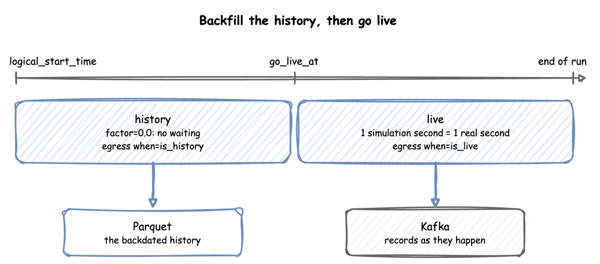

Clocks and Pacing
This page shows the clock settings of a run, described in Time and Pacing: the logical start time, the time zone, the factor, going live, the lag and strict pacing.
How to Use It
Logical Start Time
logical_start_time is the date and time that simulation time 0 maps to; without it, the run uses the moment the environment is created. A run with a backdated start writes history:
| docs/snippets/pages/pacing.py:logical-start | |
|---|---|
A datetime without an offset is read in the run's time zone, described next. In a blueprint it takes now, a signed duration such as -7d, or an ISO datetime, as YAML Blueprints describes.
Time Zone
timezone names the zone that record timestamps are written in, as an IANA name such as Australia/Melbourne. Every timestamp carries the offset of its moment, such as 2026-10-03T12:00:00.000+10:00, or +00:00 in UTC. By default the zone is that of logical_start_time when it has one, and UTC otherwise. A logical_start_time or go_live_at without an offset, now, and the default start are read in it:
The clock runs in UTC, so a daylight-saving change in the zone never adds or drops simulation time: in Melbourne, where the clocks went forward an hour on 4 October 2026, 24 hours of simulation from 12:00 on 3 October end at 13:00 on 4 October, 2026-10-04T13:00:00.000+11:00. A replayed timestamp without an offset is read in the zone too.
Factor
The wall-clock duration of a stretch of the run is its simulation duration times factor:
| docs/snippets/pages/pacing.py:factor | |
|---|---|
factor: 1.0follows the wall clock: a process that waits 5 simulation seconds waits 5 real seconds. It suits a live twin feeding a dashboard.factor: 0does not wait at all: the run goes as fast as the machine allows. It suits history, tests and experiments. Atfactor: 0each event is processed by SimPy's ownEnvironment.step, without the real-time arithmetic, andstrictis not checked, as there is no wall clock to fall behind. A pendinggo_live_atis still checked before each event, and pacing starts at it.
Go Live
factor applies until the logical clock reaches go_live_at, and from that instant the run is paced at one simulation second per real second. With a backdated logical_start_time and factor: 0, one run writes the history as fast as it can, then keeps going in real time:
| docs/snippets/pages/pacing.py:go-live | |
|---|---|
A sink with when: history receives the records stamped before go_live_at, and one with when: live the rest, so the two halves can go to different places:

Parquet History, Kafka Live builds such a run.
Lag
At a factor above 0 the run follows the wall clock, and system.simulation.lag_seconds says how many seconds it is behind, as telemetry. lag_interval sets how often, in simulation seconds or a duration. By default it is every simulation second at a factor above 0, and off at factor: 0, where the run is meant to be ahead of the wall clock; a run at factor: 0 that goes live starts it at the go-live instant. 0 turns it off:
Strict Pacing
A paced step that starts more than factor real seconds late has fallen behind the wall clock. By default the run goes on and system.simulation.lag_seconds reports the delay. With strict on, the run raises RuntimeError (Simulation too slow for real time (1.500s).) instead, as SimPy's RealtimeEnvironment does. The setting has a different default in each API:
- Low-level API:
strict=True, SimPy's default. A live script with a sink that can block passesstrict=False. - Builder:
SimulationContext(strict=False), the default, as a live run with a sink goes on when the sink is slow. - YAML:
simulation.strict, defaultfalse.
strict is never checked at factor: 0, including before go_live_at: an unpaced run has no wall clock to fall behind, and SimPy's check would raise on the first step of every unpaced script. After a pause, env.sync() (SimPy's) moves only the wall-clock anchor to now, so the next event would wait factor seconds for each simulation second since env_start, which is the start of the run, or the go-live instant once the run has gone live, or the last resume_pacing(). env.resume_pacing() moves both anchors, so the next event waits factor seconds for each simulation second after now:
| docs/snippets/pages/pacing.py:resume-pacing | |
|---|---|